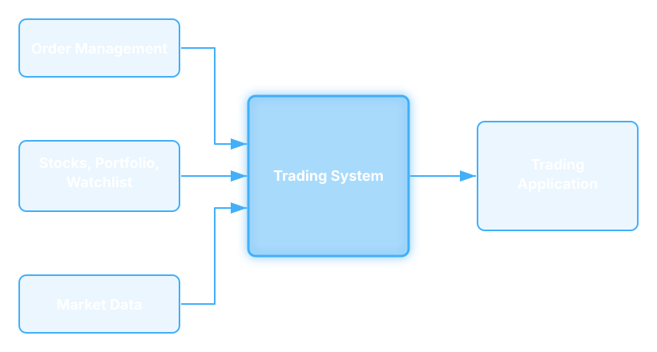
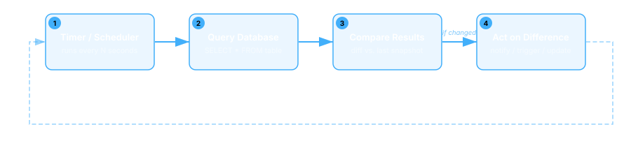
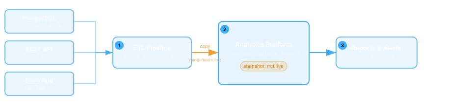
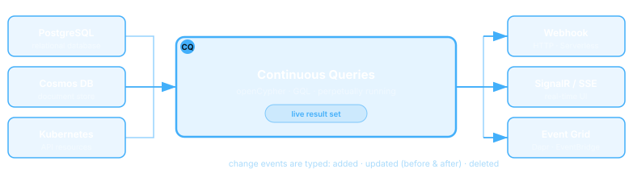
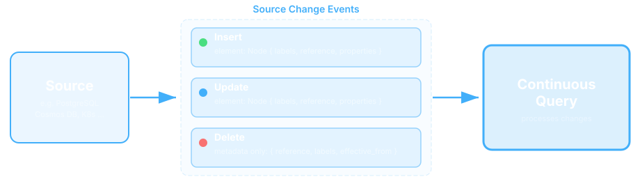

Detecting and Reacting to Change is Harder Than It Should Be
A Familiar Scenario
You have data spread across multiple systems
Data changes (or doesn't change when expected)
Your system needs to detect this and react
Quickly. Precisely. Reliably.
Example: Proactive Customer Care
A shipping carrier marks a delivery as "delayed" — your
e-commerce platform needs to identify affected customers,
check their loyalty tier, and offer compensation
before they complain
Example: Supply Chain Deadlines
A supplier committed to delivering parts by a deadline,
but the warehouse receiving system hasn't logged
an arrival — production planning needs to adjust the
schedule before the line stops
Example: Field Service Dispatch
Maintain a live set of technicians who are near an open
high-priority ticket, certified for the equipment, and not
already dispatched — across GPS, ticketing, HR, and
dispatch systems
Sound Familiar?
These are all examples of Change-Driven Systems:
Systems that take action in response to a meaningful change —
or the absence of change — in relevant data.
A problem you've probably already solved...
... more than once!!
... using different techniques!!
Example
Let's take a quick look at a change-driven system
Example: Trading Application
Market Data
Stock Portfolio
Order Management
Stock Watchlist
Sector Overviews
Top Gainers / Losers
All Dynamic !!!
Trading Application: How to ...

... get data from the source systems?
... integrate data from multiple sources?
... update all dependencies when there is a change?
... update the Trading App in real time?
... support multiple concurrent users?
... recover if the sources or my system goes down?
Oh no...???
... not again !!!
Building Change-Driven Systems
How Teams Do It Today
Three Common Approaches
Polling
Analytics Platforms
Event Stream Processing
Approach 1: Polling
Your system queries the data store periodically, compares the results to what it saw previously, and acts on the differences.

Polling: The Problems
Deceptively easy, but problems quickly emerge:
Latency — Detection lag = poll interval
Wasted resources — Polls often return nothing
State management — You own snapshots, restarts, schema changes
Duplication — Each use case needs its own polling loop
Doesn't scale — many polling loops, large data sets
Approach 2: Analytics Platforms
Bring data together in a central analytics platform where rich queries and dashboards can surface meaningful conditions across all your data.

Analytics Platforms: The Problems
Designed for insight, not immediate reaction:
Cost — Only viable if you already have one
Copied, not live — You're querying a snapshot; the real systems have moved on
ETL latency — Minutes to hours before changes are visible
Every approach carries a complexity tax — substantial engineering, configuration, and maintenance just to express simple logic about data changes and how to react to them.
Ops Burden
Clusters, connectors, registries — all yours to run
Schema Evolution
Changes ripple through the entire pipeline
Consumer Logic
Filtering, joins, dedup — still your code
Cross-Source Joins
Windowing and state management required
Time to Production
Weeks from idea to running system
The Bottom Line
Most effort is plumbing, not business logic
There has to be an easier way !
What we really need is something that is:
Purpose built to create change-driven architectures
Easy to understand and use
Unifies the detection of change and the taking action
Integrates with data where it is, with low overhead
Minimal infrastructure, works with existing systems
No-code, low-code, and full-code options
Extensible, with a rich ecosystem of connectors
No vendor lock-in, community-driven.
Introducing
What is Drasi?
Data change processing platform for building change-driven solutions.
Open Source · Apache 2.0 · CNCF Sandbox
Core Concepts

Sources
Manage (re)connection to data source
Receive / retrieve change events or mimic change feed
Tx change events to property graph node/relation updates
Emit Source Change Events stream to Continuous Queries

Sources
Connect to your existing data where it is
Relational
PostgreSQLMySQLSQL Server
Graph
Cosmos DBDataverseKubernetes
Stream
Event HubsHTTPgRPC
Table/Stream name → Node label · Columns → properties · Primary key → element ID
Continuous Query
Declarative openCypher or GQL queries
Describe the kind of change your are interest in
Take Source Change Events as input
Keep result set perpetually up to date
Emit Result Change Notifications containing diff
Continuous Query - Example
TODO
MATCH (o:Order)
WHERE o.status = 'delayed'
RETURN o
Continuous Query - Example
TODO
MATCH (o:Order)
WHERE o.status = 'delayed'
RETURN o
Let's watch Drasi detect delayed orders across a live database — in real time.
Patterns & Advanced Capabilities
Multi-Source Queries
Join data across heterogeneous systems in a single query
Create synthetic relationships — connections that don't exist in your schemas but are essential for your logic
MATCH (o:Order)-[:CONTAINS]->(p:Product)
// Order from PostgreSQL, Product from Cosmos DB
WHERE p.inventory < 10
RETURN o.id, p.name, p.inventory
Temporal Capabilities
trueFor
"Alert me if a sensor stays above threshold for 5 minutes"
trueLater
"Check back in 30 minutes — did this order ship?"
Detecting the Absence of Change
"A patient's vitals haven't updated in 10 minutes.
Is the sensor offline — or is it an emergency?"
MATCH (p:Patient)-[:HAS_MONITOR]->(m:Monitor)
WHERE m.lastReading IS NOT NULL
AND trueFor(m.lastReading = m.lastReading, 10, 'minutes')
RETURN p.name, p.room, m.lastReading
Most event-driven systems simply can't do this.
AI-Driven Workloads
Keep embeddings & model inputs aligned with live data
React to specific changes — not entire datasets
No stale context — continuous freshness, no polling
Middleware Pipeline
Transform & enrich incoming changes before they reach your queries
// Reshape nested JSON with jq before it hits the query engine
{ "transform": ".payload | { id: .orderId, total: .items | map(.price) | add }" }
Also supports: Unwind · Decode · Relabel · Promote
Demo 2
Can we catch a cross-database inconsistency the moment it happens?
Practical Takeaways
When to Reach for Drasi
You need to react to specific, meaningful data changes
You're tired of writing custom polling / filtering / state code
You want to standardize change detection across your org
You're building AI systems that need continuously fresh data
Start with one query. No migration required.
CNCF Sandbox — early-stage project with a growing ecosystem.